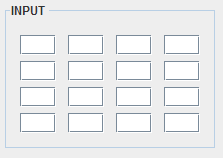
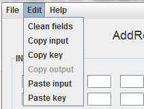

From this window we can test the functioning of the ShiftRows operation, in which a cyclic rotation of the bytes in the inout matrix is performed.
In the fields of the input matrix we can enter pairs of hexadecimal values in order to perform the transformation.
These values can be entered manually, by using the "Paste input" option in the "Edit" menu, which will paste the contents of the clipboard on the cells of the matrix, or randomly by pressing the "Random" button.
By pressing the button "Run" it will be verified that the values are correct and, if so, the transformation will be performed.
By pressing the button "Back" we will return to the operations window.
From the "Edit" menu, we can access different actions relative to the copy and paste operations of the matrices.
For a more detailed information on the functioning of the ShiftRows process, please see:
ShiftRows explanation